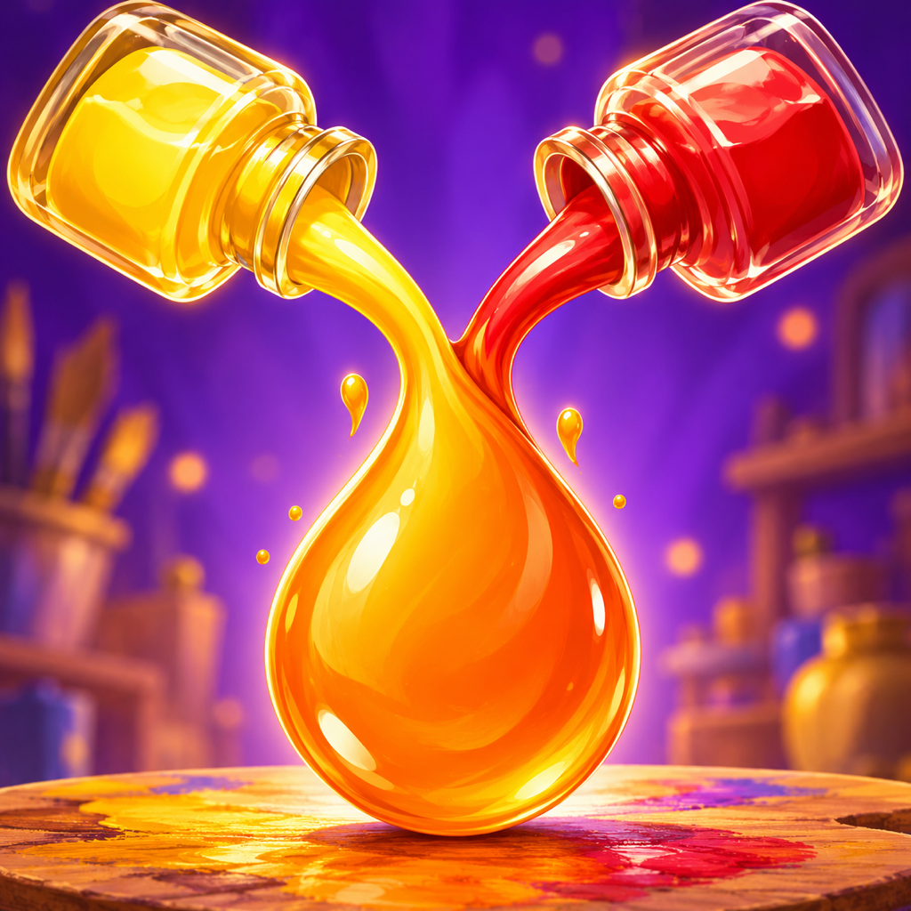

A little color. A clever connection.
Find your
color flow.
Guide colors along a path, mix pigments and bring each puzzle to life. A playful paint studio for curious minds.
Get supportMix & discover
Explore red, yellow and blue pigments, then discover the colors they create together.
Make a connection
Plan your route and guide each color to its destination.
Your own pace
Play puzzles offline. Progress and settings stay on your device.
We're here to help
Mix Flow support
For a puzzle question, bug report or privacy request, email pixerion.dev@gmail.com. Include your app version, iPhone model, iOS version and the level number, if relevant. Please avoid sending sensitive information.
Where is my progress saved?
Your progress is saved locally on your device. There is no player account or in-game cloud sync. Removing the app can erase progress; your device backup settings may also apply.
Can I play without internet?
Puzzles work offline. Advertising, including optional rewarded ads, needs an internet connection and ad availability.
How do I manage advertising privacy?
Open Settings in the game and use Privacy choices when that option is required and available in your region. See our privacy policy for details about Google AdMob.